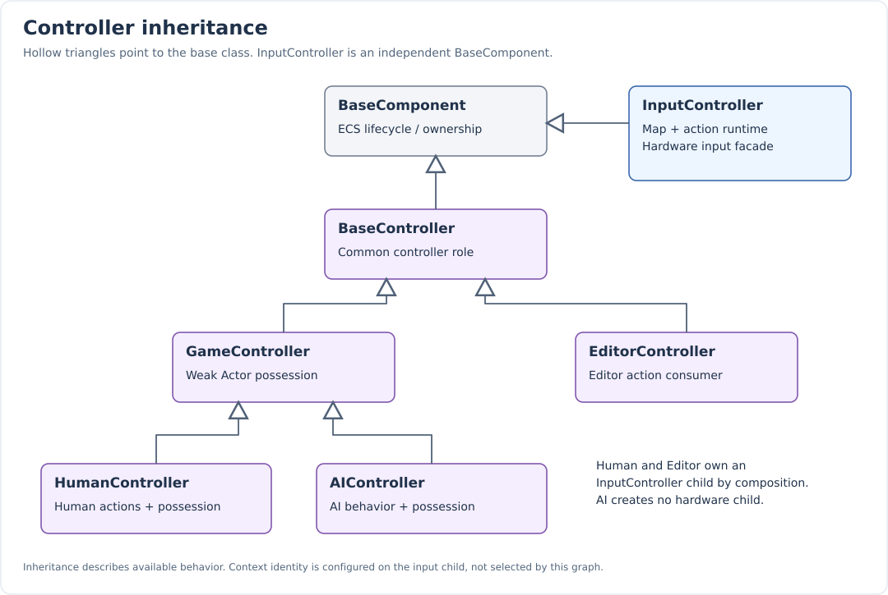
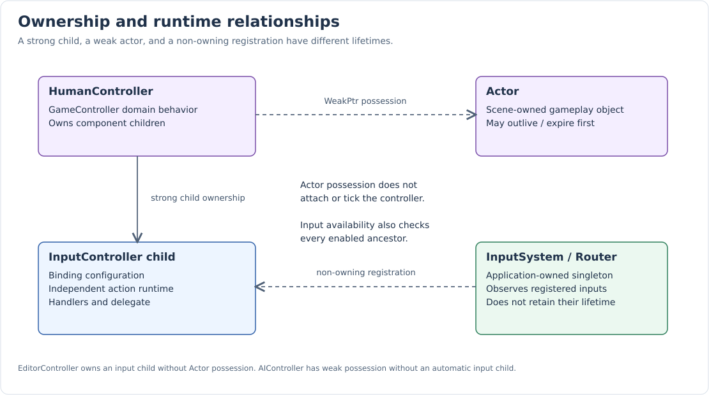

Controller Hierarchy and Ownership
Domain controllers and hardware input are separate types. A controller decides how to act. An InputController component exposes configured actions and owns their runtime. HumanController and EditorController compose that component as a child. AIController uses the gameplay possession contract without requiring hardware input.
Inheritance

| Type | Direct base | Purpose | Default input child |
|---|---|---|---|
BaseController |
BaseComponent |
Common ECS controller identity and lifecycle. |
None |
GameController |
BaseController |
Track a possessed Actor and expose possession hooks. |
None |
HumanController |
GameController |
Human-facing gameplay controller with action input. |
InputController, Gameplay |
AIController |
GameController |
Extension point for AI behavior using the same actor contract. |
None |
EditorController |
BaseController |
Editor commands and tools using action input. |
InputController, Editor |
InputController |
BaseComponent |
Bindings, action runtime, queries, callbacks, serialization, router registration. |
Not applicable |
InputController does not derive from BaseController. It is the reusable input component composed by controllers or other ECS consumers. BaseController and AIController are concrete components, not pure virtual interfaces. AIController currently supplies no built-in planner, perception, navigation, or behavior tree.
Ownership graph

-
The component tree owns children using Core’s intrusive-pointer model.
-
HumanController/EditorController own their InputController through that tree.
-
GameController stores a
Core::WeakPtr<Actor>. -
InputRouter registers InputController pointers without retaining their lifetime.
-
InputController owns its map vector, action runtime, callback table, and delegate.
A controller does not have to be a child of its possessed actor. Controller-tree ownership and possession are independent relationships. The current system also does not enforce one controller per actor. If two GameControllers possess the same actor, application code must decide which behavior is intended.
BaseController
BaseController provides the ECS controller role, generated component facilities, and inherited BaseComponent lifecycle. It does not store a hardware map, choose a context, or implement actor movement.
This keeps editor tools, gameplay possession, and alternative command sources from being forced into one class with unrelated state.
GameController possession
void possess(Actor* actor);
void unpossess();
[[nodiscard]] Actor* getControlledActor() noexcept { return _controlledActor.get(); }
[[nodiscard]] const Actor* getControlledActor() const noexcept
{
return _controlledActor.get();
}
void clear() override;
void onPreDeserialize(AbstractComponent* obj) override;
protected:
virtual void onPossess(Actor& actor) {}
virtual void onUnpossess(Actor& actor) {}
void onDeinitialize() override;| Operation | Behavior |
|---|---|
|
No change and no repeated onPossess call. |
|
Unpossess the old actor, store the new weak reference, call onPossess if non-null. |
|
Unpossess the current actor. |
|
Lock the weak reference if still alive, clear it, then call onUnpossess for that live actor. |
Actor destruction |
The weak reference expires; getControlledActor returns nullptr. |
|
Unpossess before forwarding to the base lifecycle operation. |
Clone |
Copy the component tree/configuration but leave possession empty. |
Hooks observe the reference ordering: onPossess sees the newly stored actor; onUnpossess runs after the reference has been cleared. Expiration alone does not call onUnpossess. The class has a default destructor; do not assume a destructor-specific virtual possession hook. Use the component’s explicit deinitialization path when cleanup must run.
Possession requires an Actor. A generic BaseComponent or the sample Player rectangle cannot be passed directly as an Actor merely because it has a transform. Keep input consumption in that component or use an actor/domain adapter.
This test demonstrates weak lifetime and clone independence:
TEST_F(ControllerHierarchyTests, PossessionDoesNotKeepActorAliveOrTransferToClone)
{
auto controller = GameController::Create();
auto actor = Actor::Create();
controller->possess(actor.get());
auto clone = controller->clone();
EXPECT_EQ(clone->castTo<GameController>()->getControlledActor(), nullptr);
actor.reset();
EXPECT_EQ(controller->getControlledActor(), nullptr);
controller->unpossess();
}HumanController
CLASS();
class HumanController : public GameController
{
ECS_DECL(HumanController, NX::GameController);
public:
[[nodiscard]] InputController& getInput();
[[nodiscard]] const InputController& getInput() const;
protected:
void onInitialize() override;
};The mutable getInput() initializes the domain controller, searches its direct
children for an InputController, and creates "Input"_atom in Gameplay only if
none exists. Initialization calls this path as well.
A deserialized/cloned child is reused, including its bindings and context. The default Gameplay context is applied only when a child is created; initialization does not overwrite a configured child.
The const getter never creates a child. If none exists, it asserts and aborts. Initialize through a mutable owner before using const input access. The getter searches direct children, not arbitrarily deep descendants. Avoid manually adding multiple direct input children unless you handle their selection yourself.
The domain controller has possession and command behavior; its input child has
bindings and action state. Custom HumanControllers normally read getInput().isActive()
from onTick and act on getControlledActor().
EditorController
CLASS();
class EditorController : public BaseController
{
ECS_DECL(EditorController, NX::BaseController);
public:
[[nodiscard]] InputController& getInput();
[[nodiscard]] const InputController& getInput() const;
protected:
void onInitialize() override;
};Its child-creation and const-getter contracts match HumanController, with Editor as the creation default. It derives directly from BaseController and has no Actor possession API.
The editor currently creates separate controllers for global shortcuts and viewport interactions. The latter changes its input context to EditorViewport. The controller’s class name does not itself enforce viewport focus; routing policy belongs to EditorIntegration.
AIController
AIController derives from GameController without automatically creating input. The following test shows it can initialize and possess an actor without a hardware map:
TEST_F(ControllerHierarchyTests, AIControllerNeedsNoHardwareInputComponent)
{
auto ai = AIController::Create();
ai->initialize();
EXPECT_FALSE(ai->hasChildrenAs<InputController>());
auto actor = Actor::Create();
ai->possess(actor.get());
EXPECT_EQ(ai->getControlledActor(), actor.get());
}Custom AI behavior can act from onTick using the same actor API as human behavior. The engine does not currently expose an input-action injection API for AI: call domain behavior directly or introduce a separate command layer when needed.
The same rule applies to replay/network controllers: GameController is an appropriate base for actor possession, but replay storage, network authority, and command transport must be implemented explicitly.
Enable state and lifecycle
InputController’s effective enable state combines its own setInputEnabled() flag
and isEnabled() for itself and every ancestor.
Disabling HumanController/EditorController therefore gates an owned input child.
The input flag is distinct from the inherited component tick flag.
Input is processed before scene ticking, so input registration does not depend on InputController implementing a per-frame onTick. Initialization registers it; deinitialization and destruction unregister it. The router does not own the component, so application ownership must keep it alive.
Possession by itself does not enable input, switch context, attach the controller to the scene, or tick it. Each of those decisions remains explicit.
Clone and deserialization
A cloned HumanController owns an independent input child:
TEST_F(ControllerHierarchyTests, ClonedHumanOwnsIndependentInputBindings)
{
auto human = HumanController::Create();
human->getInput().bind("Move"_atom, KeyChord::Exact(Platform::Keyboard::Key::W));
auto clone = human->clone();
auto& cloneInput = clone->castTo<HumanController>()->getInput();
EXPECT_NE(&cloneInput, &human->getInput());
EXPECT_EQ(cloneInput.getParent(), clone.get());
EXPECT_EQ(clone->getChildrenCount(), 1);
cloneInput.clearBindings();
EXPECT_EQ(human->getInput().getBindings().size(), 1);
}Bindings, context, speed, sensitivity, and the explicit input flag are copied. Runtime activity, callback registrations, delegate listeners, router registration, and possession are not copied. Initialize the clone and reinstall behavior handlers before use; restore possession through the owning gameplay system.
Deserialization restores the component tree and reflected configuration. Human and Editor controllers reuse the restored input child. The input component cancels stale runtime state and refreshes registration after deserialization. See Serialization and binding editor.
Choosing the right extension point
| Need | Start from |
|---|---|
Human input driving an Actor |
HumanController |
AI driving an Actor |
AIController, with behavior implemented by the game |
Other command source driving an Actor |
GameController plus explicit source/command behavior |
Editor tool using named actions |
EditorController |
Controller lifecycle without input or possession |
BaseController |
A component such as Player needing only action queries |
Compose InputController directly |
The existing ControllerManager is a logging shell, not a registry or automatic controller-selection service. ECS ownership and explicit enable/context choices currently determine the live consumers.